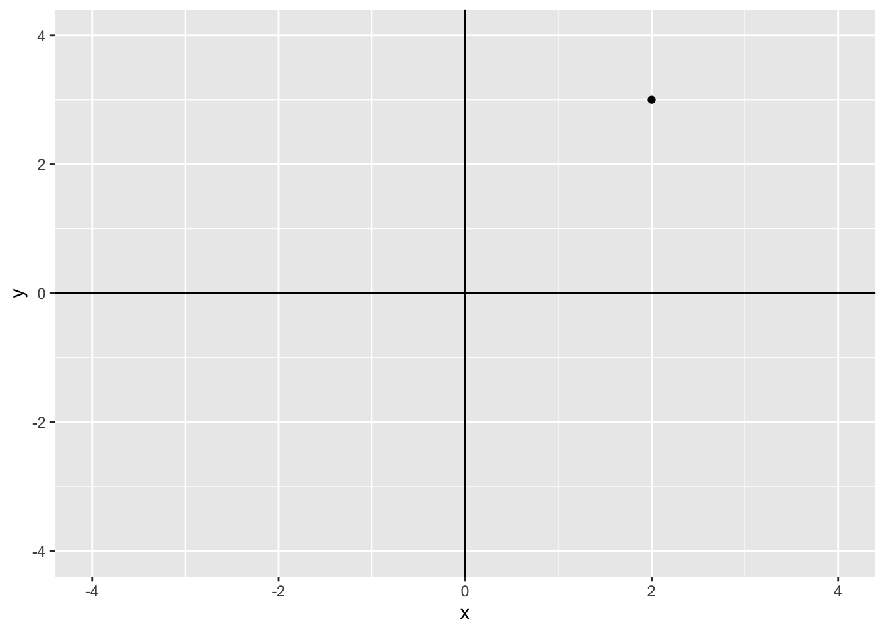
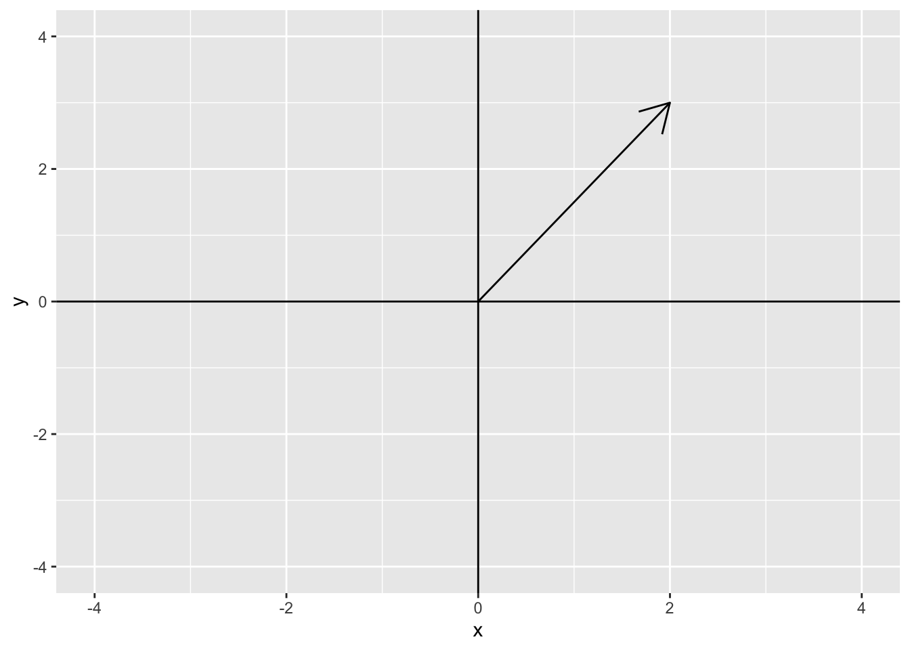
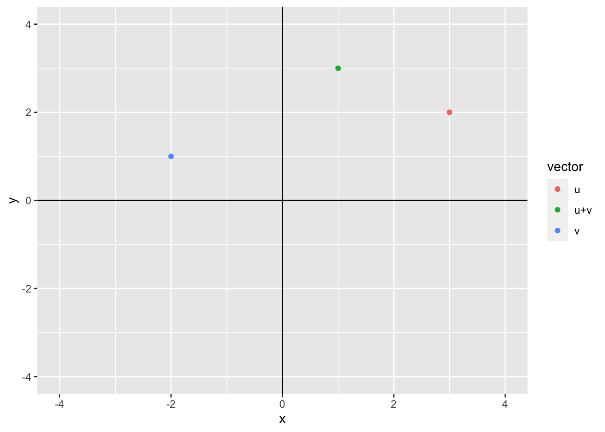
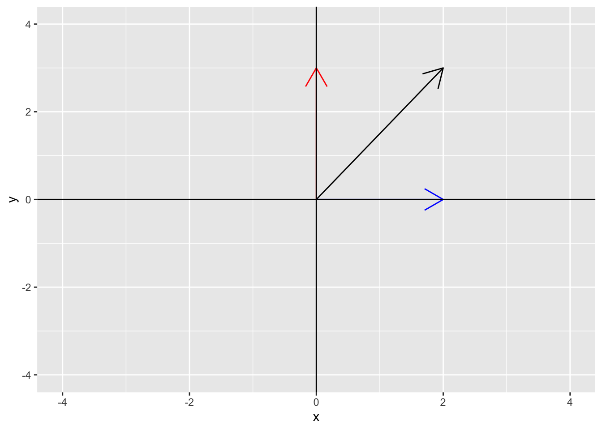
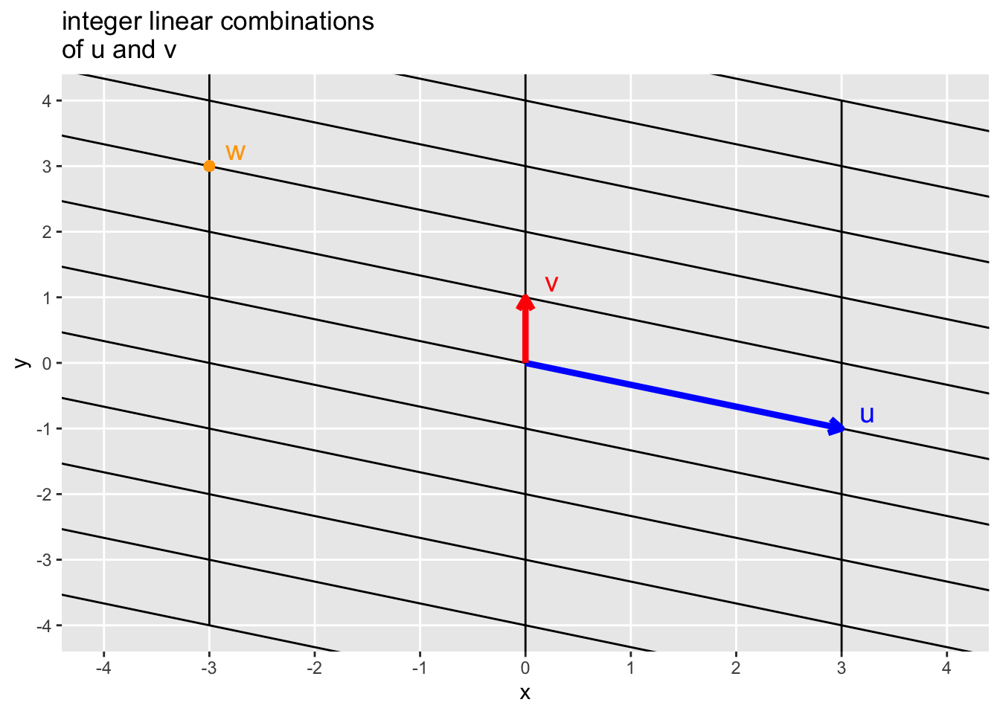
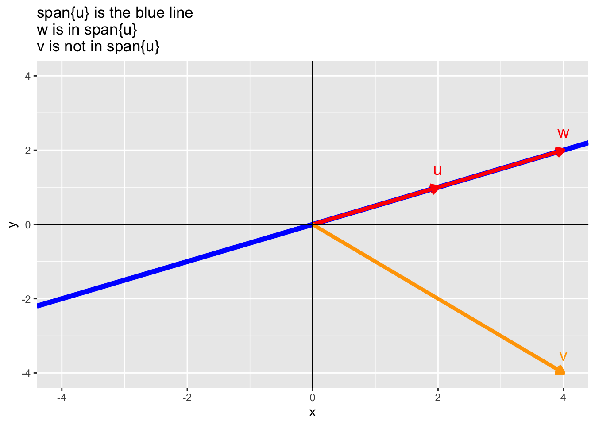

Chapter 4 Vectors spaces
library(shiny)
library(patchwork)
library(tidyverse)
# if gg3D package not installed, install the package
library(gg3D)
library(dasc2594)4.1 Vectors
For notation, we let lowercase Roman letters represent scalar numbers (e.g., n = 5, d = 7), lowercase bold letters represent vectors
\[ \begin{align*} \textbf{x} = \begin{pmatrix} x_1 \\ x_2 \\ \vdots \\ x_n \end{pmatrix}, \end{align*} \]
where the elements \(x_1, \ldots, x_n\) are scalars written in lowercase Roman. Note that vectors are assumed to follow a vertical notation where the elements of the vector (the \(x_i\)s are stacked on top of one another) and the order matters. For example, the vector
\[ \begin{align*} \mathbf{x} & = \begin{pmatrix} 5 \\ 2 \\ 8 \end{pmatrix} \end{align*} \]
has the first element \(x_1 = 5\), second element \(x_2 = 2\) and third element \(x_3 = 8\). Note that the vector \(\begin{pmatrix} 5 \\ 2 \\ 8 \end{pmatrix}\) is not the same as the vector \(\begin{pmatrix} 8 \\ 2 \\ 5 \end{pmatrix}\) because the order of the elements matters.
We can also write the vector as
\[ \begin{align*} \textbf{x} = \left( x_1, x_2, \ldots, x_n \right)', \end{align*} \]
where the \('\) symbol represents the transpose function. For our example matrix, we have \(\begin{pmatrix} 5 \\ 2 \\ 8 \end{pmatrix}' = \begin{pmatrix} 5 & 2 & 8 \end{pmatrix}\) which is the original vector but arranged in a row rather than a column. Likewise, the transpose of a row vector \(\begin{pmatrix} 5 & 2 & 8 \end{pmatrix}' = \begin{pmatrix} 5 \\ 2 \\ 8 \end{pmatrix}\) is a column vector. If \(\mathbf{x}\) is a column vector, we say that \(\mathbf{x}'\) is a row vector and if \(\mathbf{x}\) is a row vector, the \(\mathbf{x}'\) is a column vector.
To create a vector we can use the concatenate function c(). For example, the vector \(\mathbf{x} = \begin{pmatrix} 5 \\ 2 \\ 8 \end{pmatrix}\) can be created as the R object using
where the <- assigns the values in the vector c(5, 2, 8) to the object named x. To print the values of x, we can use
## [1] 5 2 8which prints the elements of x. Notice that R prints the elements of \(\mathbf{x}\) in a row; however, \(\mathbf{x}\) is a column vector. This inconsistency is present to allow the output to be printed in a manner easier to read (more numbers fit on a row). If we put the column vector into a data.frame, then the vector will be presented as a column vector
## x
## 1 5
## 2 2
## 3 8One can use the index operator \([\hspace{2mm}]\) to select specific elements of the vector \(\mathbf{x}\). For example, the first element of \(\mathbf{x}\), \(x_1\), is
## [1] 5and the third element of \(\mathbf{x}\), \(x_3\), is
## [1] 8The transpose function t() turns a column vector into a row vector (or a row vector into a column vector). For example the transpose \(\mathbf{x}'\) of \(\mathbf{x}\) is
## [,1] [,2] [,3]
## [1,] 5 2 8where tx is R object storing the transpose of \(\mathbf{x}\) and is a row vector. The transpose of tx. Notice the indices on the output of the row vector tx. The index operator [1, ] selects the first row to tx and the index operator [, 1] gives the first column tx. Taking the transpose again gives us back the original column vector
## [,1]
## [1,] 5
## [2,] 2
## [3,] 84.1.1 Properties of Vectors
For any real valued scalars \(a, b \in \mathcal{R}\) and any vectors \(\mathbf{x}, \mathbf{y}, \mathbf{z} \in \mathcal{R}^n\) (vectors of real numbers of length \(n\)),
- scalar multiplication \[ \begin{align*} a \mathbf{x} & = a \begin{pmatrix} x_1 \\ x_2 \\ \vdots \\ x_n \end{pmatrix} \\ & = \begin{pmatrix} a x_1 \\ a x_2 \\ \vdots \\ a x_n \end{pmatrix} \end{align*} \]
where the scalar \(a\) is multiplied by each element of the vector. For example,
\[ \begin{align*} 4 \begin{pmatrix} 4 \\ 6 \\ 7 \\ 12 \end{pmatrix} & = \begin{pmatrix} 4 * 4 \\ 4 * 6 \\ 4 * 7 \\ 4 * 12 \end{pmatrix} \\ & = \begin{pmatrix} 16 \\ 24 \\ 28 \\ 48 \end{pmatrix} \end{align*} \]
In R, we can multiply the vector by a scalar as
## [1] 16 24 28 48or if the vector \(\mathbf{x} = \left( 4, 6, 7, 12 \right)'\) we can write this as
## [1] 16 24 28 48- scalar multiplicative commutivity
\[ \begin{align*} a (b \mathbf{x}) & = (ab) \mathbf{x} & = b (a \mathbf{x}) \end{align*} \]
## [1] 96 144 168 288## [1] 96 144 168 288- scalar additive associativity
\[ \begin{align*} a \mathbf{x} + b \mathbf{x} & = (a + b) \mathbf{x} \end{align*} \]
- vector additive associativity
\[ \begin{align*} a \mathbf{x} + a \mathbf{y} & = a (\mathbf{x} + \mathbf{y}) \end{align*} \]
- vector associativity \[ \begin{align*} \mathbf{x} + \mathbf{y} & = \mathbf{y} + \mathbf{x} \end{align*} \]
\[ \begin{align*} (\mathbf{x} + \mathbf{y}) + \mathbf{z} & = \mathbf{x} + (\mathbf{y} + \mathbf{z}) \end{align*} \]
## [1] 5 5 8 5## [1] 5 5 8 5## [1] 10 7 12 11## [1] 10 7 12 11- Identity Element of Addition: For any vector \(\mathbf{x}\) of length \(n\), there exists a vector \(\mathbf{0}\), known as the zero vector, such that
\[ \begin{align*} \mathbf{x} + \mathbf{0} & = \mathbf{x} \end{align*} \]
## [1] 1 2 3 4## [1] 1 2 3 4- Inverse Element of Addition: For any vector \(\mathbf{x}\) of length \(n\), there exists a vector \(-\mathbf{x}\), known as the additive inverse vector, such that
\[ \begin{align*} \mathbf{x} + (- \mathbf{x}) & = \mathbf{0} \end{align*} \]
## [1] 0 0 0 04.2 Vector addition
Two vectors of length \(n\) can be added elementwise
\[ \begin{align*} \mathbf{x} + \mathbf{y} & = \begin{pmatrix} x_1 \\ x_2 \\ \vdots \\ x_n \end{pmatrix} + \begin{pmatrix} y_1 \\ y_2 \\ \vdots \\ y_n \end{pmatrix} \\ & = \begin{pmatrix} x_1 + y_1 \\ x_2 + y_2 \\ \vdots \\ x_n + y_n \end{pmatrix} \end{align*} \]
For example,
\[ \begin{align*} \begin{pmatrix} 3 \\ 1 \\ -4 \\ 3 \end{pmatrix} + \begin{pmatrix} -3 \\ 17 \\ -39 \\ 4 \end{pmatrix} & = \begin{pmatrix} 3 + (-3) \\ 1 + 17 \\ -4 + (-39) \\ 3 + 4 \end{pmatrix} \\ & = \begin{pmatrix} 0 \\ 18 \\ -43 \\ 7 \end{pmatrix} \end{align*} \]
In R, we have
## [1] 0 18 -43 7If two vectors \(\mathbf{x}\) and \(\mathbf{y}\) are of different lengths, then they cannot be added together. Using R, we get the following error:
## Warning in x + y: longer object length is not a multiple of shorter object
## length## [1] 2 4 6 5The error is telling us that the vector \(\mathbf{x}\) and the vector \(\mathbf{y}\) do not have the same length.
Be careful when adding vectors in R. R uses “recycling” which means two vectors of different lengths can be added together if one vector is of a length that is a multiple of the other vector. For example, if \(\mathbf{x} = (1, 2)'\) is a vector of length 2 and \(\mathbf{y} = (1, 2, 3, 4)\) is a vector of length 4, R will add \(\mathbf{x} + \mathbf{y}\) by replicating the vector \(\mathbf{x}\) twice (i.e., \(\mathbf{x} + \mathbf{y} = \left( \mathbf{x}', \mathbf{x}' \right)' = \left(1, 2, 1, 2 \right)' + \mathbf{y}\))
## [1] 2 4 4 6## [1] 2 4 4 64.2.1 The geometric interpretation of vectors in \(\mathcal{R}^2\)
Let \(\mathcal{R}^2\) be a real coordinate space of \(2\) dimensions. You are already familiar with the Cartesian plane that consists of ordered pairs \((x, y)\). The Cartesian plane defines the real coordinate space \(\mathbf{R}^2\) of two dimensions. In \(\mathbf{R}^2\), the location of any point of interest can be defined using the \(x\) and \(y\). For example, the plot below shows the location of the point (2, 3)
dat <- data.frame(
x = 2,
y = 3
)
ggplot(data = dat, aes(x = x, y = y)) +
geom_point() +
geom_vline(xintercept = 0) +
geom_hline(yintercept = 0) +
coord_cartesian(xlim = c(-4, 4), ylim = c(-4, 4))
A vector space is a generalization of this representation. In \(\mathcal{R}^2\), we say that the vector \(\mathbf{z} = c(2, 3)\) is centered at the origin (0, 0) and has length 2 in the \(x\)-axis and length 3 in the \(y\)-axis. The plot below shows this vector

We can also decompose the vector \(\mathbf{z}\) into its \(x\) and \(y\) components. The \(x\) component of \(\mathbf{z}\) is (2, 0) and the \(y\) component of \(\mathbf{z}\) is (0, 3). The following plot shows the \(x\) component (2, 0) in blue and the \(y\) component (0, 3) in red.

The below Shiny app allows you to plot the vector for any \((x, y)\) pair of your choosing.
The shiny app can be downloaded and run on your own computer using
library(shiny)
runGitHub(rep = "multivariable-math", username = "jtipton25", subdir = "shiny-apps/chapter-03/vector-space") 4.2.1.1 Addition of vectors
We can represent the addition of vectors geometrically as well. Consider the two vectors \(\mathbf{u}\) = (3, 2) and \(\mathbf{v}\) = (-2, 1) where \(\mathbf{u} + \mathbf{v}\) = (1, 3).
data.frame(x = c(3, -2, 1), y = c(2, 1, 3), vector = c("u", "v", "u+v")) %>%
ggplot() +
geom_point(aes(x = x, y = y, color = vector)) +
geom_vline(xintercept = 0) +
geom_hline(yintercept = 0) +
coord_cartesian(xlim = c(-4, 4), ylim = c(-4, 4))
We can represent the sum using vectors by adding \(\mathbf{u}\) first then adding \(\mathbf{v}\) to \(\mathbf{u}\) or by adding \(\mathbf{v}\) first and then \(\mathbf{u}\) to get
df <- data.frame(x = c(0, 3, 1, -2), y = c(0, 2, 3, 1))
p1 <- ggplot() +
geom_segment(aes(x = 0, xend = 3, y = 0, yend = 2), arrow = arrow(), color = "blue") +
geom_segment(aes(x = 3, xend = 3 - 2, y = 2, yend = 2 + 1), arrow = arrow(), color = "red") +
geom_segment(aes(x = 0, xend = 3 - 2, y = 0, yend = 2 + 1), arrow = arrow(), color = "black") +
geom_vline(xintercept = 0) +
geom_hline(yintercept = 0) +
coord_cartesian(xlim = c(-4, 4), ylim = c(-4, 4)) +
geom_polygon(data = df, aes(x = x, y = y), fill = "grey", alpha = 0.5) +
ggtitle("u + v")
p2 <- ggplot() +
geom_segment(aes(x = 0, xend = -2, y = 0, yend = 1), arrow = arrow(), color = "red") +
geom_segment(aes(x = -2, xend = -2 + 3, y = 1, yend = 1 + 2), arrow = arrow(), color = "blue") +
geom_segment(aes(x = 0, xend = 3 - 2, y = 0, yend = 2 + 1), arrow = arrow(), color = "black") +
geom_vline(xintercept = 0) +
geom_hline(yintercept = 0) +
coord_cartesian(xlim = c(-4, 4), ylim = c(-4, 4)) +
geom_polygon(data = df, aes(x = x, y = y), fill = "grey", alpha = 0.5) +
ggtitle("v + u")
p1 + p2
Notice that the sum of these vectors defines a parallelogram where the sum \(\mathbf{u} + \mathbf{v}\) is the diagonal of the shaded parallelogram. This geometric interpretation will serve as a basis for interpreting vector equations in higher dimensions where typical visualization methods fail.
4.2.2 Scalar multiplication of vectors
We can represent the multiplication of a vector by a scalar geometrically as well. Consider the vector \(\mathbf{u}\) = (3, 2) and the scalars \(a = 2\) and \(b = -1\). Then, we can plot \(\mathbf{u}\), \(a\mathbf{u}\), and \(b\mathbf{u}\).
data.frame(x = c(3, 2 * 3, -1 * 3), y = c(2, 2 * 2, -1 * 2), vector = c("u", "a*u", "b*u")) %>%
ggplot() +
geom_point(aes(x = x, y = y, color = vector)) +
geom_segment(aes(x = 0, xend = x, y = 0, yend = y, color = vector), arrow = arrow(), alpha = 0.75) +
geom_vline(xintercept = 0) +
geom_hline(yintercept = 0) +
coord_cartesian(xlim = c(-6, 6), ylim = c(-6, 6))In fact, if \(a\) is allowed to take on any values, then the set of all possible values of \(a \mathbf{u}\) for all values of \(a\) defines an infinite line
ggplot() +
geom_abline(slope = 2/3, intercept = 0) +
geom_point(aes(x = 3, y = 2)) +
geom_segment(aes(x = 0, xend = 3, y = 0, yend = 2), arrow = arrow(), color = "black") +
geom_vline(xintercept = 0) +
geom_hline(yintercept = 0) +
coord_cartesian(xlim = c(-4, 4), ylim = c(-4, 4)) 
4.2.3 The geometric interpretation of vectors in \(\mathcal{R}^3\)
Let the vector \(\mathbf{u} = c(-2, 3, 5)\). Then, the figure below shows the vector in 3 dimensions.
Draw picture by hand
4.2.4 The geometric interpretation of vectors in \(\mathcal{R}^n\)
As the number of dimensions increases, the same interpretation can be used, but the ability to visualize higher dimensions becomes more difficult.
4.2.5 Linear Combinations of Vectors
We say that for any two scalars \(a\) and \(b\) and any two vectors \(\mathbf{x}\) and \(\mathbf{y}\) of length \(n\), the sum
\[ \begin{align*} a \mathbf{x} + b \mathbf{y} & = \begin{pmatrix} a x_1 + b y_1 \\ a x_2 + b y_2 \\ \vdots \\ a x_n + b y_n \\ \end{pmatrix} \end{align*} \]
is called a linear combination. The idea of a linear combination can be extended to \(K\) different scalars \(\{ a_1, \ldots, a_K \}\) and \(K\) different vectors \(\{ \mathbf{x}_1, \ldots, \mathbf{x}_K\}\) each of length \(n\) as
\[ \begin{align*} a_1 \mathbf{x}_1 + a_2 + \mathbf{x}_2 + \ldots + a_K \mathbf{x}_K = \sum_{k=1}^K a_k \mathbf{x}_k & = \begin{pmatrix} \sum_{k=1}^K a_k x_{k1} \\ \sum_{k=1}^K a_k x_{k2} \\ \vdots \\ \sum_{k=1}^K a_k x_{kn} \\ \end{pmatrix} \end{align*} \] The scalars \(a_k\) are called coefficients (sometimes also called weights).
- Example: Consider the linear combination \(a \mathbf{u} + b \mathbf{v}\) where
\[ \begin{align*} \mathbf{u} = \begin{pmatrix} 3 \\ 6\end{pmatrix} && \mathbf{v} = \begin{pmatrix} -2 \\ 1\end{pmatrix}. \end{align*} \] Are there values of \(a\) and \(b\) such \(a \mathbf{x}_1 + b \mathbf{x}_2 = \begin{pmatrix} 9 \\ - 4 \end{pmatrix}\)? To answer this question, we can write the linear combination as \[ \begin{align*} a \begin{pmatrix} 3 \\ 6\end{pmatrix} + b \begin{pmatrix} -2 \\ 1\end{pmatrix} & = \begin{pmatrix} 9 \\ -4 \end{pmatrix} \end{align*} \] which can be written using the property of scalar multiplication as \[ \begin{align*} \begin{pmatrix} 3a \\ 6a \end{pmatrix} + \begin{pmatrix} -2b \\ b \end{pmatrix} & = \begin{pmatrix} 9 \\ -4 \end{pmatrix} \end{align*} \] and using properties of vector addition can be written as \[ \begin{align*} \begin{pmatrix} 3a - 2b \\ 6a + b \end{pmatrix} & = \begin{pmatrix} 9 \\ -4 \end{pmatrix} \end{align*} \] Recognizing this as a system of linear equations \[ \begin{align*} 3a - 2b & = 9 \\ 6a + b & = -4, \end{align*} \] the system of equations can be written in an augmented matrix form as \[ \begin{align*} \begin{pmatrix} 3 & - 2 & 9\\ 6 & 1 & -4 \end{pmatrix} \end{align*} \] Reducing the augmented matrix to reduced row echelon form gives
## [,1] [,2] [,3]
## [1,] 1 0 0.06666667
## [2,] 0 1 -4.40000000which has solutions \(a = 0.0667\) and \(b = -4.4\).
- Result: Any vector equation \(a_1 \mathbf{x}_1 + a_2 + \mathbf{x}_2 + \ldots + a_K \mathbf{x}_K = \mathbf{c}\) for a given constant vector \(\mathbf{b}\) has the same solution set as the augmented matrix
\[ \begin{align*} \begin{pmatrix} \mathbf{x}_1 & \mathbf{x}_2 & \cdots & \mathbf{x}_K & \mathbf{b} \end{pmatrix} \end{align*} \] Equivalently, the set of vectors \(\{\mathbf{x}_k\}_{k=1}^K\) can only be combined with linear coefficients \(\{a_k\}_{k=1}^K\) to equal the vector \(\mathbf{b}\) if the linear system of equations is consistent.
4.2.6 The geometric interpretation of linear combinations of vectors
Consider the vectors \(\mathbf{u} = \begin{pmatrix} \sqrt{2} \\ - \sqrt{2} \end{pmatrix}\) and \(\mathbf{v} = \begin{pmatrix} 1 \\ 1\end{pmatrix}\) shown in the figure below on the left.

- Exercise: Given \(\mathbf{u} = \begin{pmatrix} 3 \\ -1 \end{pmatrix}\) and \(\mathbf{v} = begin{pmatrix} 0 \\ 1 \end{pmatrix}\), estimate the linear combination of \(\mathbf{u}\) and \(\mathbf{v}\) that gives the point \(\mathbf{w}\) in the figure below.

4.3 Span
Let \(\mathbf{a}_1, \ldots, \mathbf{a}_K\) be vectors in \(\mathcal{R}^n\). We say the vector \(\mathbf{w}\) is in the span of \(\mathbf{a}_1, \ldots, \mathbf{a}_K\) (\(\mathbf{w} \in \mbox{span}\{ \mathbf{a}_1, \ldots, \mathbf{a}_K \}\)) if there exists coefficients \(x_1, \ldots, x_K\) such that \(\mathbf{w} = \sum_{k=1}^K x_k \mathbf{a}_k\).
Example: While not a vector notation, you already understand the span from polynomial functions. For example, assume you have the functions 1, \(x\), and \(x^2\). Then, the functions \(-4 + 3x^2\) (\(a_1 = -4, a_2 = 0, a_3 = 3\)) and \(-3 + 4x - 2x^2\) (\(a_1 = -3, a_2 = 4, a_3 = -2\)) are in the span of functions \(\{1, x, x^2\}\), but the functions \(x^3\), \(x^4 - 2x^2\), etc., are not in the span of \(\{1, x, x^2\}\) because you cannot write these as a linear combination of \(a_1 1 + a_2 x + a_3 x^2\).
4.3.1 Geometric example of the span
- Example: Consider the vector \(\mathbf{u} = \begin{pmatrix} 2 \\ 1 \end{pmatrix}\). Then, the vector \(\mathbf{w} = \begin{pmatrix} 4 \\ 2 \end{pmatrix}\) is in the \(\mbox{span}\{\mathbf{u}\}\) because \(\mathbf{w} = 2 \mathbf{u}\) but the vector \(\mathbf{v} = \begin{pmatrix} 4 \\ -4 \end{pmatrix}\) is not in the \(\mbox{span}\{\mathbf{u}\}\) because there is no coefficient \(a\) such that \(\mathbf{w} = a \mathbf{u}\). In this example, the vector \(\mathbf{u}\) is a 2-dimensional vector (lives in \(\mathcal{R}^2\)–a plane) but the \(\mbox{span}\{\mathbf{u}\}\) lives in 1-dimension (a line).
ggplot() +
geom_abline(slope = 1/2, intercept = 0, color = "blue", size = 2) +
geom_segment(aes(x = 0, xend = 2, y = 0, yend = 1), arrow = arrow(length = unit(0.1, "inches")), size = 1.5, color = "red") +
geom_segment(aes(x = 0, xend = 4, y = 0, yend = 2), arrow = arrow(length = unit(0.1, "inches")), size = 1.5, color = "red") +
geom_segment(aes(x = 0, xend = 4, y = 0, yend = -4), arrow = arrow(length = unit(0.1, "inches")), size = 1.5, color = "orange") +
geom_vline(xintercept = 0) +
geom_hline(yintercept = 0) +
coord_cartesian(xlim = c(-4, 4), ylim = c(-4, 4)) +
geom_text(data = data.frame(x = c(2, 4, 4), y = c(1, 2, -4), text = c("u", "w", "v")),
aes(x = x, y = y + 0.5, label = text), size = 5, inherit.aes = FALSE,
color = c("red", "red", "orange")) +
ggtitle("span{u} is the blue line \nw is in span{u}\nv is not in span{u}")
From the example above, we can answer the question “Is the point (a, b) on the line defined by the vector \(\mathbf{u}\)?” by asking whether the point (a, b) is in the \(span\{\mathbf{u}\}\). While this is trivial for such a simple problem, the use of the span will make things easier in higher dimensions.
- Example: do in class 2 3-d vectors that are not scalar multiples of each other define a plane. Does a point lie within the plane? Use the span to answer this question.